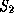
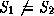
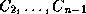
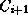

Common Lisp the Language, 2nd Edition

A
class is an object that determines the structure and behavior
of a set of other objects, which are called its instances.
A class can inherit structure and behavior from other classes. A class whose definition refers to other classes for the purpose of inheriting from them is said to be a subclass of each of those classes. The classes that are designated for purposes of inheritance are said to be superclasses of the inheriting class.
A class can have a name. The function class-name takes a class object and returns its name. The name of an anonymous class is nil. A symbol can name a class. The function find-class takes a symbol and returns the class that the symbol names. A class has a proper name if the name is a symbol and if the name of the class names that class. That is, a class C has the proper name S if S = (class-name C) and C = (find-class S). Notice that it is possible for (find-class ) = (find-class ) and . If C = (find-class S), we say that C is the class named S.
A class is a direct superclass of a class
if explicitly designates as a
superclass in its definition. In this case, is a direct subclass of . A class is a superclass of a class if there exists a series of
classes 
such that  is a
direct superclass of for 1 i < n. In this case,
is a subclass of . A class is
considered neither a superclass nor a subclass of itself. That is, if
is a superclass of , then  . The set of classes consisting of some given
class C along with all of its superclasses is called ``C and its
superclasses.''
. The set of classes consisting of some given
class C along with all of its superclasses is called ``C and its
superclasses.''
Each class has a class precedence list, which is a total ordering on the set of the given class and its superclasses. The total ordering is expressed as a list ordered from most specific to least specific. The class precedence list is used in several ways. In general, more specific classes can shadow, or override, features that would otherwise be inherited from less specific classes. The method selection and combination process uses the class precedence list to order methods from most specific to least specific.
When a class is defined, the order in which its direct superclasses are mentioned in the defining form is important. Each class has a local precedence order, which is a list consisting of the class followed by its direct superclasses in the order mentioned in the defining form.
A class precedence list is always consistent with the local precedence order of each class in the list. The classes in each local precedence order appear within the class precedence list in the same order. If the local precedence orders are inconsistent with each other, no class precedence list can be constructed, and an error is signaled. The class precedence list and its computation is discussed in section 28.1.5.
Classes are organized into a directed acyclic graph. There are two distinguished classes, named t and standard-object. The class named t has no superclasses. It is a superclass of every class except itself. The class named standard-object is an instance of the class standard-class and is a superclass of every class that is an instance of standard-class except itself.
There is a mapping from the Common Lisp Object System class space into the Common Lisp type space. Many of the standard Common Lisp types have a corresponding class that has the same name as the type. Some Common Lisp types do not have a corresponding class. The integration of the type and class systems is discussed in section 28.1.4.
Classes are represented by objects that are themselves instances of classes. The class of the class of an object is termed the metaclass of that object. When no misinterpretation is possible, the term metaclass will be used to refer to a class that has instances that are themselves classes. The metaclass determines the form of inheritance used by the classes that are its instances and the representation of the instances of those classes. The Common Lisp Object System provides a default metaclass, standard-class, that is appropriate for most programs. The meta-object protocol provides mechanisms for defining and using new metaclasses.
Except where otherwise specified, all classes mentioned in this chapter are instances of the class standard-class, all generic functions are instances of the class standard-generic-function, and all methods are instances of the class standard-method.